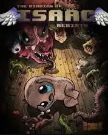
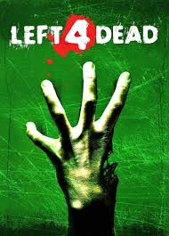
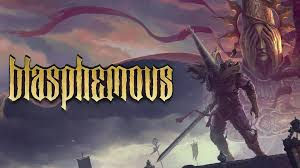
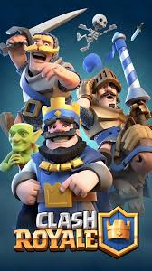

the bending of issac

diciendo verdad no tiene criticas este juego ya que es bueno
pero eso si es costoso ya que tiene unos cuantos dlcs
pero el juego base es bueno pero se puede terminar rapido
para eso estan los dlcs que ya uno hace poco salio
y es gratis recomendado bastante
letf 4 dead

este juego es muy bueno ya que la comunidad no lo deja morir por los
sientos de mods que tiene pero si quieres jugar el 1 o el 2 siento que el 2 es mejor ya que tiene muchas cosas
pero si quieres jugart el 1 tamnien es arte arte se queda corto
pero si es un buen juego a tan bajo precio y la cantidad que tiene
buen juego recomendado
brawl stars

este juego es la clara definicion de como no se debe hacer un juego osea toda la comunidad es buena
pero el juego es una porqueria de juego ya que tiene muchos bug que beneficia a muchos y a otros no
y tambien jugar los otros modos de juegos es una porqueria por que los emparejamintos son tan
malos que uno prefiere jugar solo por quue el emparejamiento es una cagada pero ya que la gente se
acostumbra ya que
si algun dia ven alguien descargando esa madre mejor dile que lo borren y nunca pero nunca le metan dinero
por que no podrasd salir de esa porqueria de juego
en conclusion borren esa madre de la pley store
terraria

este juegos es bueno ya que esta disponible para android y tambien para pc y consolas
es tan bueno que la comunidad es bastante unida para saber quien es el mas enfermo para subir el mods imposibles
enb fin la comunidad y la empresa no deja morir el juego ya que tiene mucho contenido
igual que muchos mods buenos
en fin juego recomendado
the forest

este juego es bueno aqui un ejemplo es como minecratf pero sin cubitos es un juego anbientado en una
isla y tambien es del genero de terror se puede jugar solo o con amigos con amigos son mas buenas las cosass
pero siendo sincero creo que el 2 es mejor pero siempre esta el 1 como primera opcion ya que los requisitos no son tantos
y no cuesta tanto como el dos en fin recomendado
blasphemous

este juego no puedo decir mucho de el lo e jugado muy poco pero
es bueno pero un poco dificil peor ya que la gente lo recomienda
clash royal

no hay mucho que decir solamente tengo unas palabras para este juego que , que lo borren de la pley store
en fin esta es mi opinion de ciertos juegos las opiniones negatigas son de pura broma :V